Third-year Mechanical and Space Engineering student at the University of Sydney. I work across chassis design, aerodynamics, control systems, and manufacturing, taking projects from first-principles analysis through CAD and simulation into the workshop.
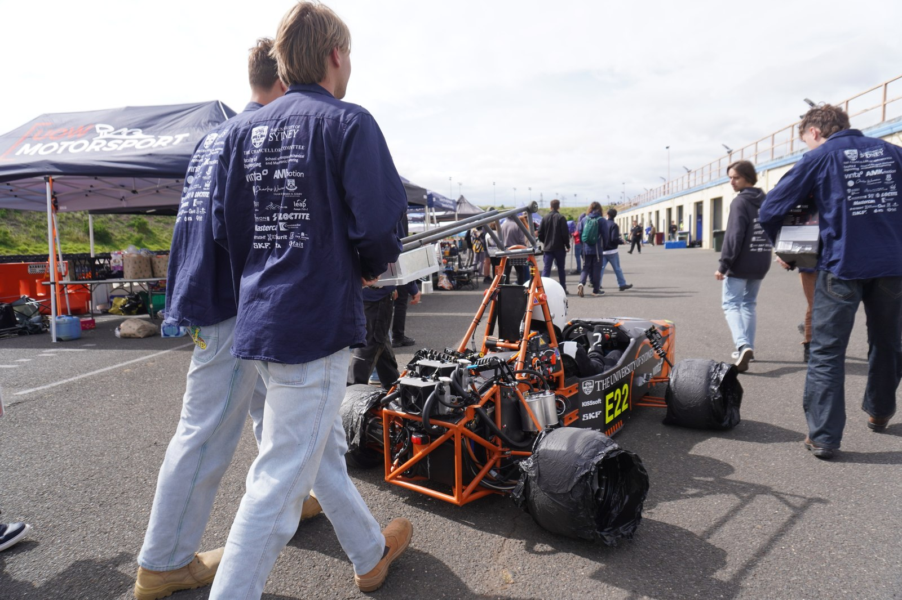
As Senior Chassis Engineer, I built and ran a static structural FEA model of the chassis as a beam-element line-body assembly, applying remote forces and displacements at the suspension hardpoints to represent cornering, braking, and bump loads. The model outputs total deformation, axial force, torsional moment, and shear force across every member, letting us find the highest-loaded nodes before a single tube is cut.
This kind of analysis directly informs the trade study I ran for the SM27 Preliminary Design Review (below), where the same load-case thinking scales from a full spaceframe down to individual member sizing.
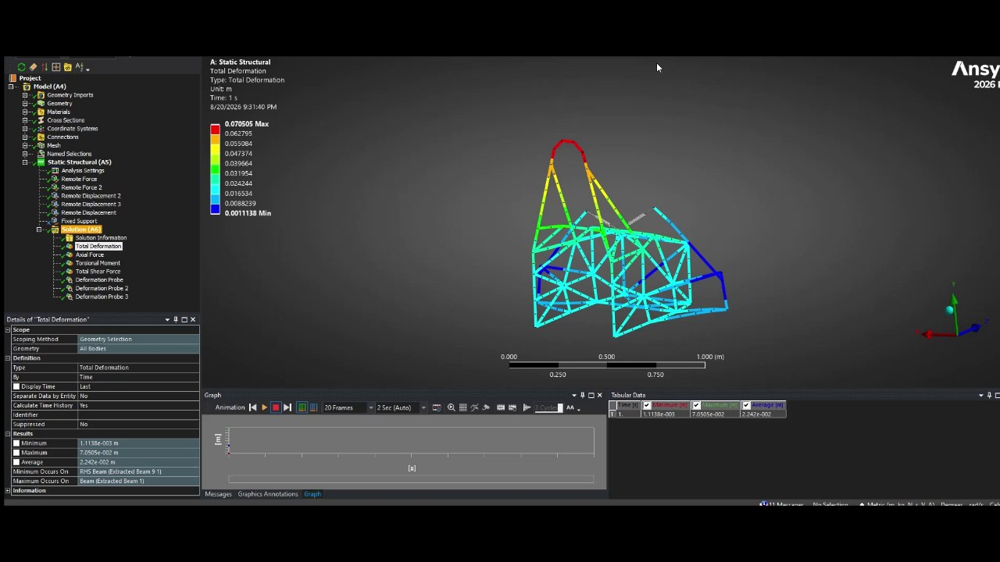
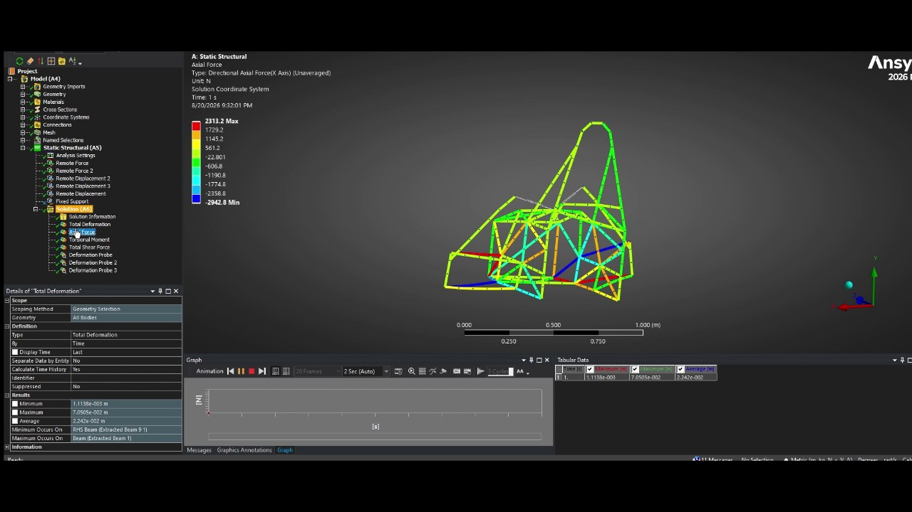
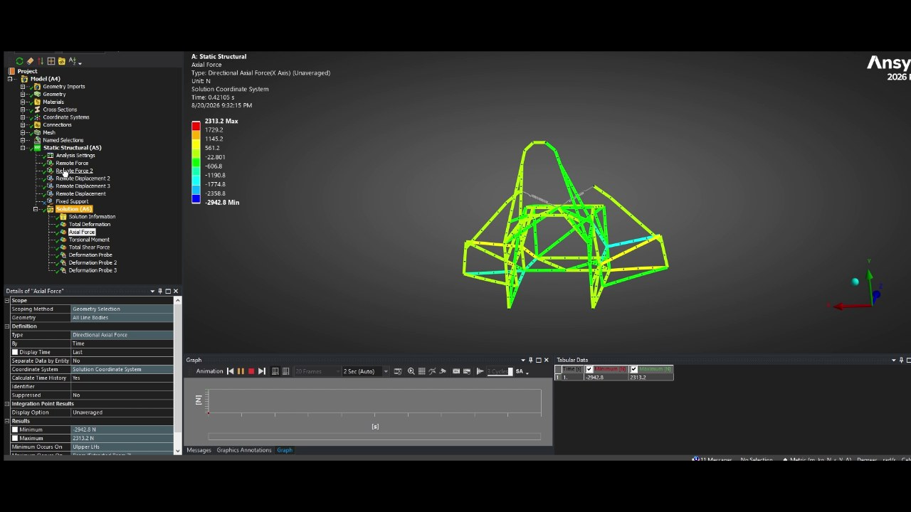
I contributed to the chassis subsection's Preliminary Design Report evaluating three candidate architectures for the 2027 car: a carbon-fibre monocoque, a steel tube spaceframe, and a monocoque-spaceframe hybrid. The report worked through geometric and structural rules compliance, packaging of the accumulator and driver, load-case analysis (static, longitudinal, lateral, aerodynamic) for each architecture's failure modes, and a full manufacturing feasibility and cost assessment against a $13,000 AUD budget.
The down-selection came down to a weighted decision matrix across eight criteria, with SES/rules compliance risk and schedule feasibility weighted heaviest, given the team currently holds no SES-compliant composite panels. That risk profile, more than raw stiffness-to-weight potential, is what tipped the recommendation toward a tube chassis for SM27.
| Criterion | Weight | Tube | Hybrid | Monocoque |
|---|---|---|---|---|
| Mass potential | 0.05 | 2 | 3 | 5 |
| Torsional stiffness potential | 0.05 | 2 | 4 | 5 |
| Packaging & aero freedom | 0.12 | 5 | 3 | 2 |
| Manufacturability & team capability | 0.12 | 4 | 3 | 2 |
| Schedule feasibility | 0.16 | 4 | 2 | 3 |
| Cost feasibility | 0.18 | 5 | 3 | 2 |
| Rules / SES compliance risk | 0.22 | 4 | 3 | 1 |
| Serviceability & iteration | 0.10 | 5 | 4 | 2 |
| Weighted total | 1.00 | 4.20 | 2.99 | 2.24 |
Starting from zero CFD experience, I taught myself SolidWorks aerofoil surfacing and Ansys Fluent meshing and solving in under two weeks for a Sydney Motorsport aero induction task. After reproducing the provided sample front wing's results, I designed my own three-element wing from scratch, inspired by 2018-era F2 front wings: a NACA 6412 mainplane for a flatter, nosecone-friendly profile, and two S1223 racing-foil flap elements at 8° and 23° angle of attack, plus turning vanes and endplate "scoops" to generate controlled counter-rotating vortices.
The reference wing simulation converged cleanly; my own design's volume mesh (quality 0.07) meant the solution never fully converged past ~50 iterations, so I report results from that early-converging window and treat them as indicative rather than final. The vortex behaviour from the turning vanes was validated qualitatively even where the force values weren't.
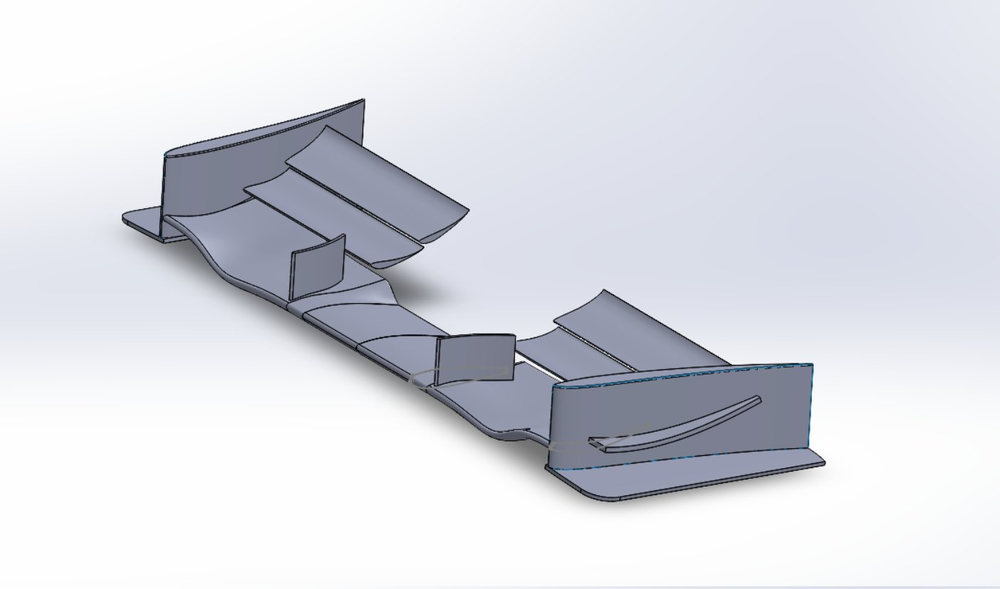
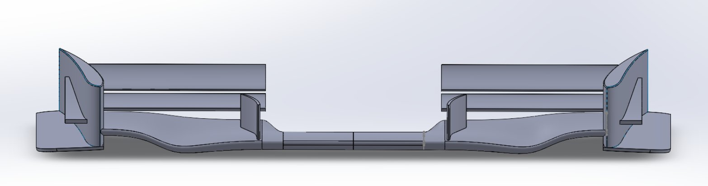
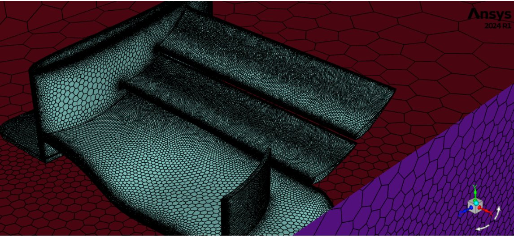
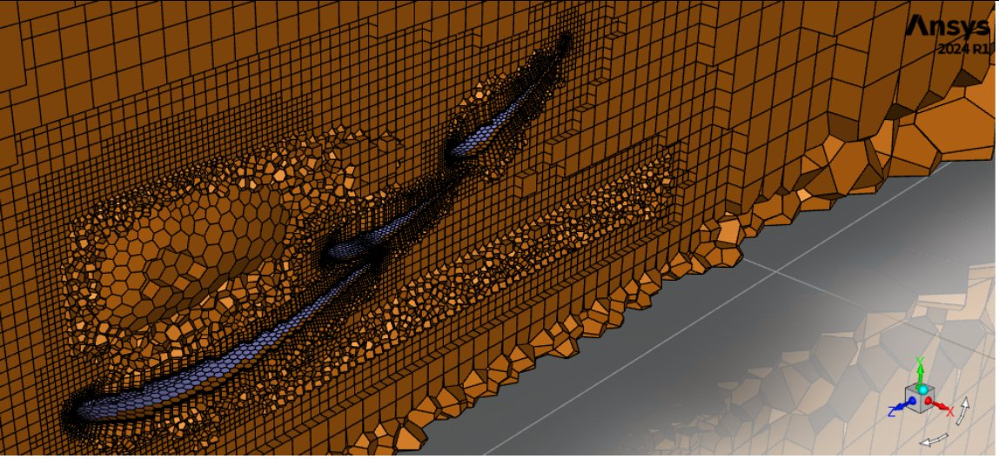
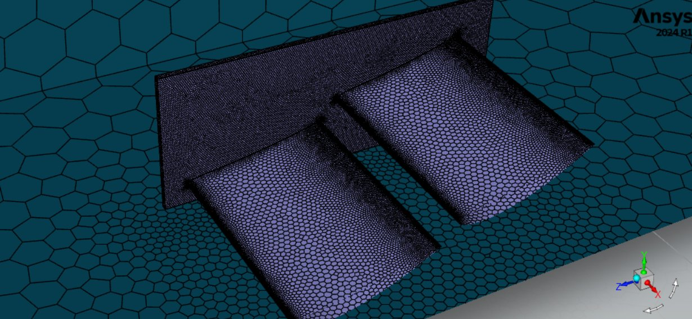
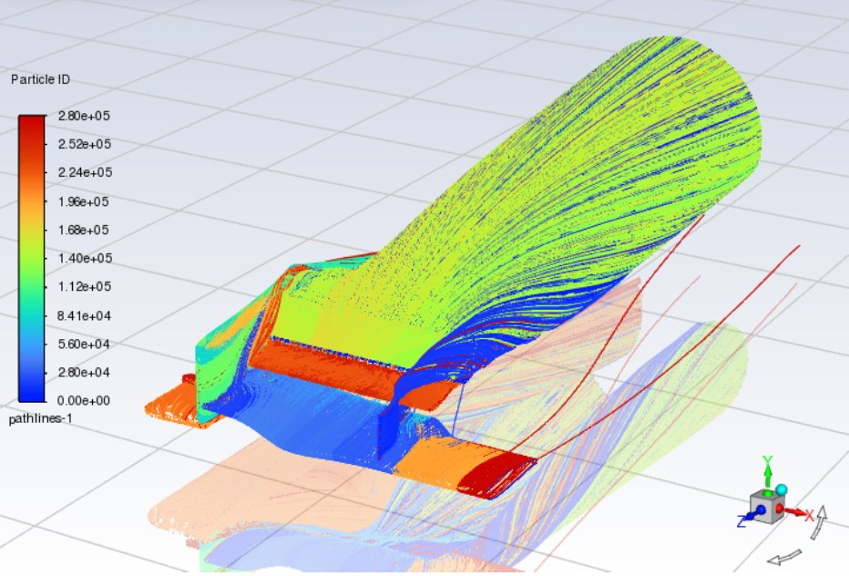
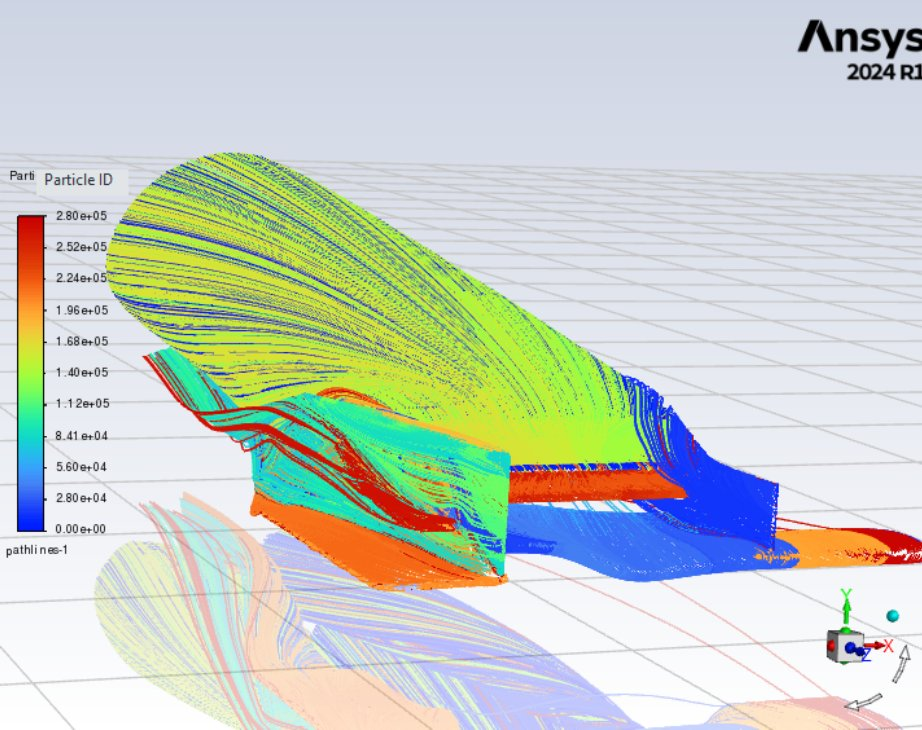
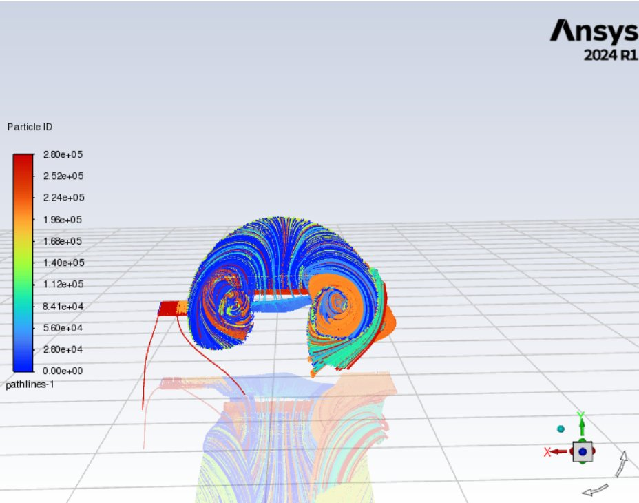
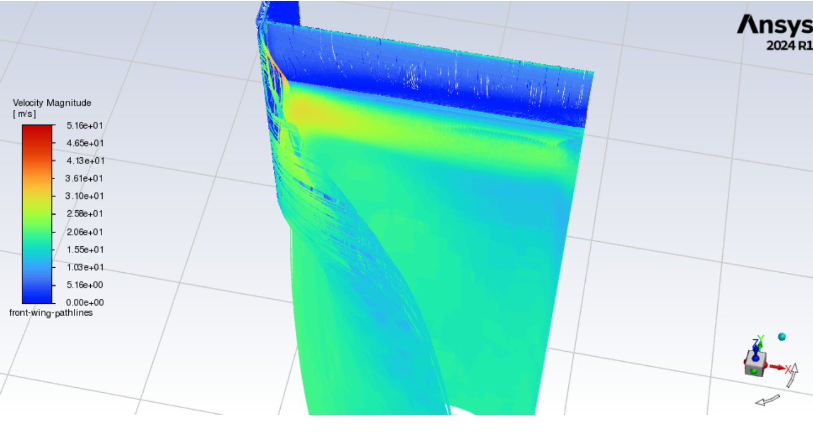
For an open-ended control systems design project, I chose to design a controller for a Floating Piston Expander (FPE), the warm-end throttle of a Collins-cycle cryocooler intended for zero-boil-off cooling of cryogenic propellants on long-duration space missions. Rather than a simpler system like car suspension, I picked the FPE because it was an active university research problem with a real path to a thesis.
I linearised the nonlinear piston dynamics around four reservoir-pressure operating points and designed a gain-scheduled state feedback controller with integral action on position error, using pole placement to meet settling-time and overshoot targets at each segment. Because the full state isn't measurable, I paired this with a Luenberger observer for state estimation, then validated the closed-loop system in Simulink under nominal conditions, a helium-leak disturbance, and ±60 μm sensor noise.
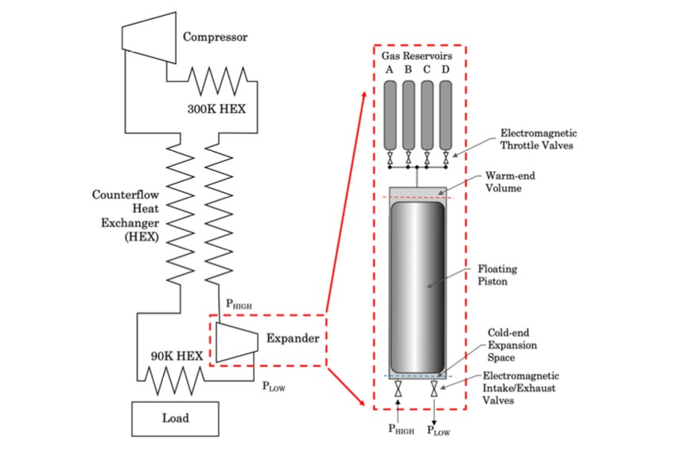
First-year design-and-build project: research, design, and manufacture a small compressed-air reciprocating engine from raw stock in 24 workshop hours, running on 50 psi shop air. As a group of four, we designed a dual-acting, multi-cylinder engine that uses a "dog bone" sliding valve, a double-headed piston rather than the flat sliding plate most teams use, to route high- and low-pressure air between two synchronised flywheels.
I worked through the engineering analysis behind the design: thick-walled pressure vessel theory (Lamé's equation) to size the cylinder against hoop stress, Grashoff's formula for minimum piston head thickness, and a full dynamic model of piston displacement, velocity, and acceleration through the crank cycle to size the flywheel and predict cylinder pressure over one revolution. All parts were then detailed to AS1100 drawing standard and machined on lathe, mill, and drill press.
One of thirty team members to attend the 2025 Australasian FSAE competition in Melbourne. On-site, I worked on mechanical aspects of the car, assisting with assembly, fixes, and general preparation for scrutineering alongside the rest of the mechanical crew.
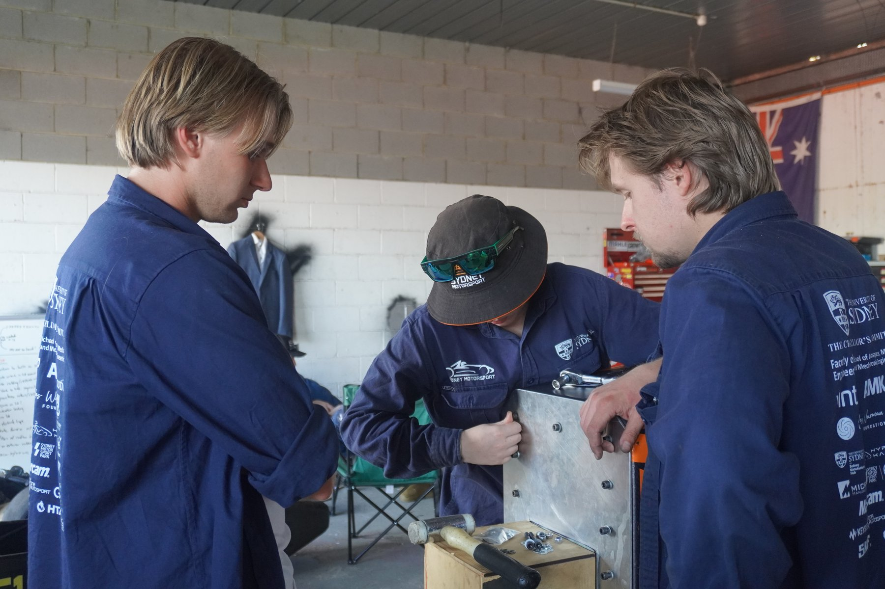
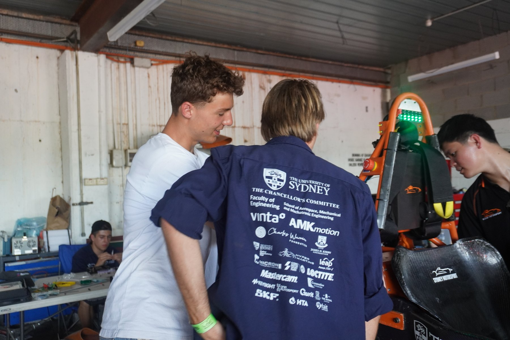
SolidWorks CAD, FEA (SolidWorks Simulation & Ansys Mechanical), CFD (Ansys Fluent), MATLAB & Simulink, control system design, Python (numerical solvers, simulation, ML), R.
Lathe, mill, drill press; carbon fibre layup, mould-making, and composite manufacturing; precision machining to tight tolerance.
Bachelor of Engineering Honours (Mechanical Engineering with Space), University of Sydney, 3rd year, 88.25 WAM (High Distinction). Dalyell Scholar, Dean's List 2024 & 2025.